INFÂNCIA E JUVENTUDE - 1987/00
Lionel Messi sempre foi apaixonado por futebol desde muito jovem,
chegando
a se recusar a sair de casa sem uma bola. Ele começou a jogar futebol nas categorias menores
do
Abanderado Grandoli, onde seu pai Jorge Messi também era treinador.
Mais tarde, Messi ingressou nas divisões menores do Newell's Old Boys, seu clube do coração, no entanto, aos 11 anos, foi diagnosticado um problema hormonal que atrasou seu crescimento ósseo. Seus pais tiveram que pagar US$ 900 por mês para o tratamento com injeções alternadas em cada perna todas as noites.
Mais tarde, Messi ingressou nas divisões menores do Newell's Old Boys, seu clube do coração, no entanto, aos 11 anos, foi diagnosticado um problema hormonal que atrasou seu crescimento ósseo. Seus pais tiveram que pagar US$ 900 por mês para o tratamento com injeções alternadas em cada perna todas as noites.
O tratamento foi custeado pela fundação onde seu pai trabalhava, mas
o
Newell's Old Boys não quis arcar com os custos da continuação do tratamento. Como resultado,
seu
pai ofereceu Lionel ao River Plate, que estava interessado em contratar o jovem talento.
No entanto, o Newell's acabou oferecendo um salário muito baixo para manter Messi no clube. O River Plate voltou atrás e o Newell's acabou aceitando sua permanência. Messi continuou a se destacar nas categorias menores e, aos 13 anos há havia marcado 234 gols em 176 jogos.
No entanto, o Newell's acabou oferecendo um salário muito baixo para manter Messi no clube. O River Plate voltou atrás e o Newell's acabou aceitando sua permanência. Messi continuou a se destacar nas categorias menores e, aos 13 anos há havia marcado 234 gols em 176 jogos.
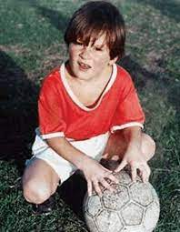
DESPERTAR DO GÊNIO - 2008/10
Após a partida, Messi foi eleito o melhor jogador do torneio e, dois
dias depois, foi eleito o Melhor jogador do mundo pela FIFA.
Ao final de 2009, Messi acumulou seis títulos pelo Barcelona - Copa do Rei, La Liga, Liga dos Campeões da UEFA, Supercopa da Espanha, Supercopa da UEFA e Copa do Mundo de Clubes da FIFA - além dos prêmios Ballon d'Or e Melhor jogador do mundo pela FIFA. Este foi considerado o melhor ano de sua carreira até então, mas ainda estavam por vir anos ainda melhores.
Ao final de 2009, Messi acumulou seis títulos pelo Barcelona - Copa do Rei, La Liga, Liga dos Campeões da UEFA, Supercopa da Espanha, Supercopa da UEFA e Copa do Mundo de Clubes da FIFA - além dos prêmios Ballon d'Or e Melhor jogador do mundo pela FIFA. Este foi considerado o melhor ano de sua carreira até então, mas ainda estavam por vir anos ainda melhores.
No início da temporada 2008-09, Messi recebeu a camisa 10 após a saída de Ronaldinho e se
tornou
o principal astro do Barcelona. Sob o comando do novo treinador, Josep Guardiola, Messi foi
utilizado como falso 9 e ajudou a equipe a conquistar uma inédita tríplice coroa - Copa do
Rei,
La Liga e Liga dos Campeões. Ele também foi artilheiro da Liga dos Campeões com nove gols
marcados, incluindo um na final contra o Manchester United.
Poucos meses depois, ele venceu o prêmio Ballon d'Or e foi fundamental na conquista do título da Copa do Mundo de Clubes da FIFA, marcando um gol na final contra o Estudiantes.
Poucos meses depois, ele venceu o prêmio Ballon d'Or e foi fundamental na conquista do título da Copa do Mundo de Clubes da FIFA, marcando um gol na final contra o Estudiantes.

O AUGE ESTATÍSTICO - 2011/12
Em 2011, Messi já era um dos maiores jogadores de futebol do
mundo, tendo conquistado dois prêmios Ballon d'Or consecutivos e liderado o Barcelona a
vitórias
na La Liga e outros títulos. No entanto, a torcida do Barcelona ansiava por uma conquista
ainda
maior: a Liga dos Campeões da UEFA, que havia sido conquistada pelo Internazionale no ano
anterior.
Felizmente, Messi não decepcionou. O Barcelona alcançou a final da Liga dos Campeões de 2011 e venceu o Manchester United por 3 a 1, com Messi marcando um dos gols.
Felizmente, Messi não decepcionou. O Barcelona alcançou a final da Liga dos Campeões de 2011 e venceu o Manchester United por 3 a 1, com Messi marcando um dos gols.
Essa vitória garantiu ao Barcelona uma vaga no Mundial de
Clubes, onde eles enfrentaram o Santos de Neymar e Ganso na final e venceram por 4 a 1 em
uma
exibição dominan
Em 2012, Messi conquistou sua quarta bola de ouro consecutiva e marcou 91 gols em apenas um ano, um feito considerado um dos mais incríveis da história do futebol e que ainda é um recorde atualmente.
Messi também ajudou o Barcelona a conquistar a Copa do Rei e a La Liga nessa temporada. Ele terminou como artilheiro da La Liga, com 50 gols em 37 jogos, estabelecendo um novo recorde na competição.
Em 2012, Messi conquistou sua quarta bola de ouro consecutiva e marcou 91 gols em apenas um ano, um feito considerado um dos mais incríveis da história do futebol e que ainda é um recorde atualmente.
Messi também ajudou o Barcelona a conquistar a Copa do Rei e a La Liga nessa temporada. Ele terminou como artilheiro da La Liga, com 50 gols em 37 jogos, estabelecendo um novo recorde na competição.
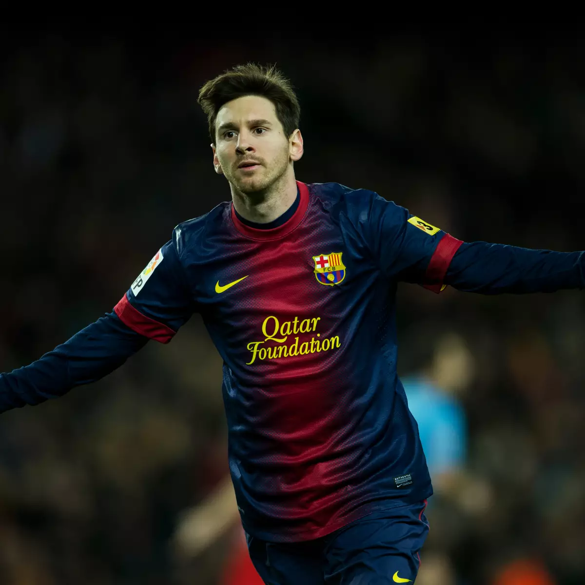
TRIO MSN - 2014/17
Infelizmente, o trio que encantou o mundo com seu futebol no
Barcelona
foi desfeito com a saída de Neymar para o Paris Saint-Germain em 2017 e, posteriormente, com
a
transferência de Suárez em 2020
Messi permaneceu no clube até agosto de 2021, quando se transferiu também para o Paris Saint Germain, porém antes dessa transferência, ele conseguiu trazer várias felicidades para os torcedores catalães (como são chamados os fãs do Barcelona).
Messi permaneceu no clube até agosto de 2021, quando se transferiu também para o Paris Saint Germain, porém antes dessa transferência, ele conseguiu trazer várias felicidades para os torcedores catalães (como são chamados os fãs do Barcelona).
Entre 2014 e 2017, Messi fez parte do considerado melhor trio de ataque da história do
futebol,
juntamente com Neymar e Suárez. Esse trio lendário conquistou uma Champions League e outros
oito
títulos, além de ter marcado impressionantes 364 gols e distribuído 173 assistências em
apenas
três temporadas.
O MSN (sigla com a inicial de cada jogador) foi uma época mágica para o futebol, onde cada jogo era uma oportunidade de ver esses três craques em ação, completamente em sintonia. Neymar, inclusive, foi cotado como um dos melhores jogadores do mundo na época, e Suárez ganhou a chuteira de ouro, como o maior artilheiro europeu.
O MSN (sigla com a inicial de cada jogador) foi uma época mágica para o futebol, onde cada jogo era uma oportunidade de ver esses três craques em ação, completamente em sintonia. Neymar, inclusive, foi cotado como um dos melhores jogadores do mundo na época, e Suárez ganhou a chuteira de ouro, como o maior artilheiro europeu.
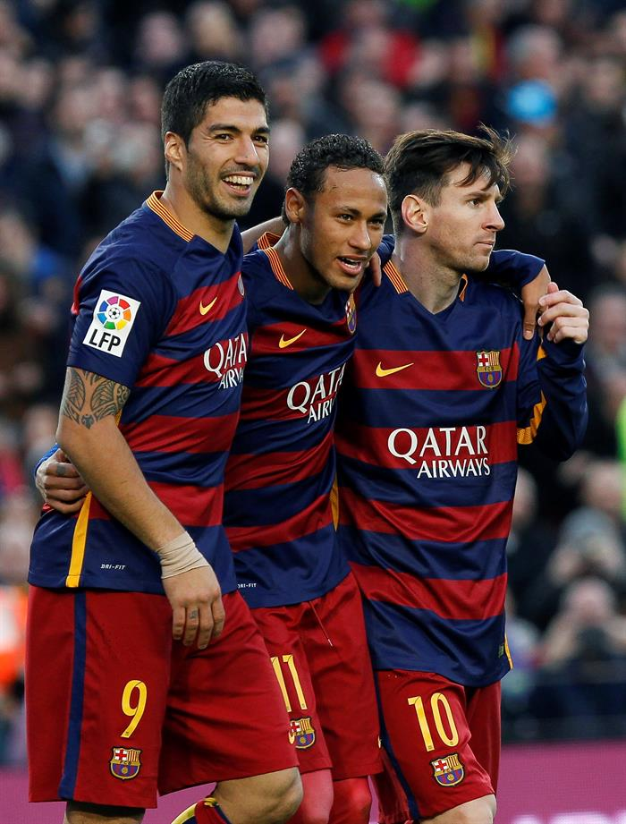
MESSIDEPENDÊNCIA - 2018/20
Durante as temporadas de 2018 até 2020, Messi se destacou
como um
jogador fundamental para o Barcelona. Na temporada 2018-19, ele marcou incríveis 51 gols e
deu
22 assistências em 50 jogos disputados, ajudando o clube a conquistar a La Liga e a Copa del
Rey.
Sua incrível atuação na temporada lhe rendeu o apelido de "Messidependência", devido à sua influência em mais da metade dos gols do Barcelona na época, representando 48% dos gols marcados pelo time.
Sua incrível atuação na temporada lhe rendeu o apelido de "Messidependência", devido à sua influência em mais da metade dos gols do Barcelona na época, representando 48% dos gols marcados pelo time.
Na temporada 2018-19, Messi foi responsável por levar o
Barcelona até a semifinal da Champions League quase que sozinho. Em um jogo de ida
memorável,
ele marcou dois gols e conduziu o time a uma vitória por 3 a 0 sobre o Liverpool. Na partida
de
volta, o Barcelona sofreu uma derrota por 4 a 0, perdendo a oportunidade de avançar para a
final
da competição.
Após uma excelente temporada individual no Barcelona, Messi ficou frustrado com os bastidores do clube, como transferências fracassadas, saídas conturbadas de jogadores importantes e gestão instável. Isso contribuiu para sua insatisfação e saída do clube em 2021.
Após uma excelente temporada individual no Barcelona, Messi ficou frustrado com os bastidores do clube, como transferências fracassadas, saídas conturbadas de jogadores importantes e gestão instável. Isso contribuiu para sua insatisfação e saída do clube em 2021.
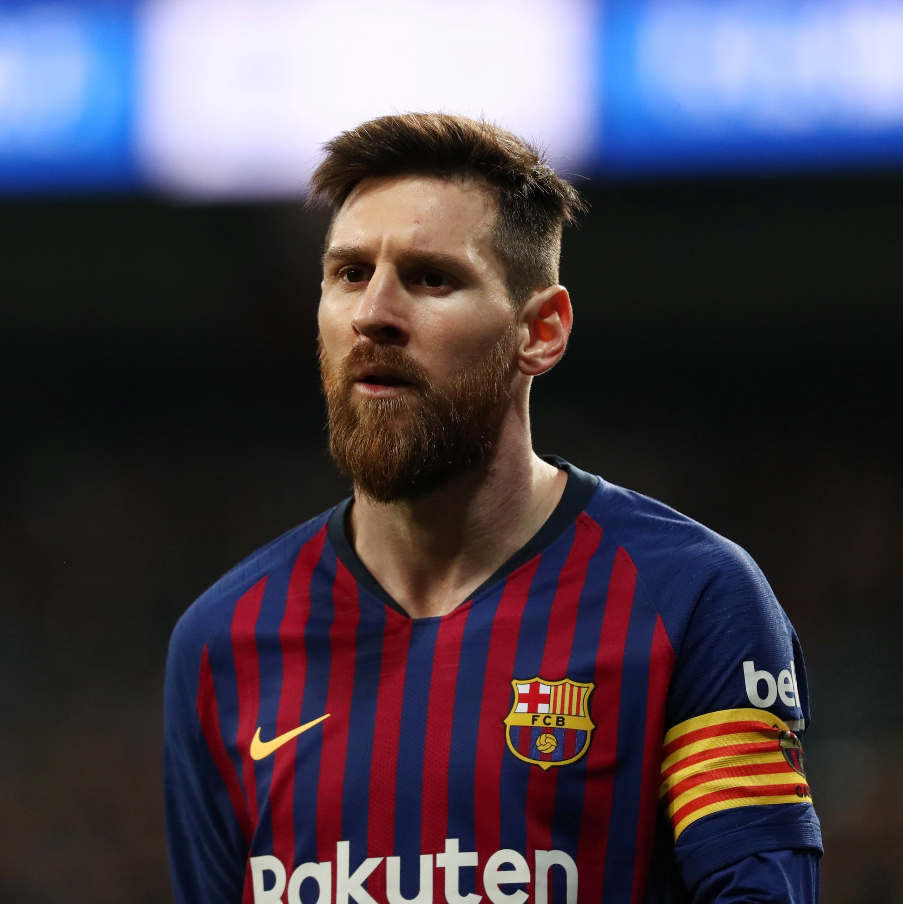
DESPEDIDA DO BARCELONA
Durante sua despedida, Messi enfatizou que não queria sair do
Barcelona
e que a decisão de deixar o clube foi tomada por fatores externos. Ele também expressou sua
gratidão por tudo o que o clube lhe proporcionou ao longo dos anos e por ter tido a
oportunidade
de jogar com tantos jogadores talentosos.
No final da cerimônia, Messi deu uma volta pelo campo, recebendo aplausos e cumprimentos dos torcedores, que não esconderam sua tristeza pela partida do jogador. Foi um momento emocionante e comovente para todos os envolvidos, e marca o fim de uma era para o Barcelona.
No final da cerimônia, Messi deu uma volta pelo campo, recebendo aplausos e cumprimentos dos torcedores, que não esconderam sua tristeza pela partida do jogador. Foi um momento emocionante e comovente para todos os envolvidos, e marca o fim de uma era para o Barcelona.
A despedida de Messi do Barcelona foi um momento emocionante para os fãs do clube e do
jogador.
Depois de mais de 20 anos no Barcelona, Messi anunciou sua saída do clube em agosto de 2021.
A
notícia chocou o mundo do futebol e gerou muita tristeza entre os torcedores do Barcelona.
A despedida oficial de Messi ocorreu em 8 de agosto de 2021, no Camp Nou, o estádio do Barcelona. Foi um evento emocionante, com Messi falando ao público presente e aos fãs do mundo todo, agradecendo ao clube e aos torcedores por todo o amor e apoio que recebeu durante sua estadia no Barcelona.
A despedida oficial de Messi ocorreu em 8 de agosto de 2021, no Camp Nou, o estádio do Barcelona. Foi um evento emocionante, com Messi falando ao público presente e aos fãs do mundo todo, agradecendo ao clube e aos torcedores por todo o amor e apoio que recebeu durante sua estadia no Barcelona.
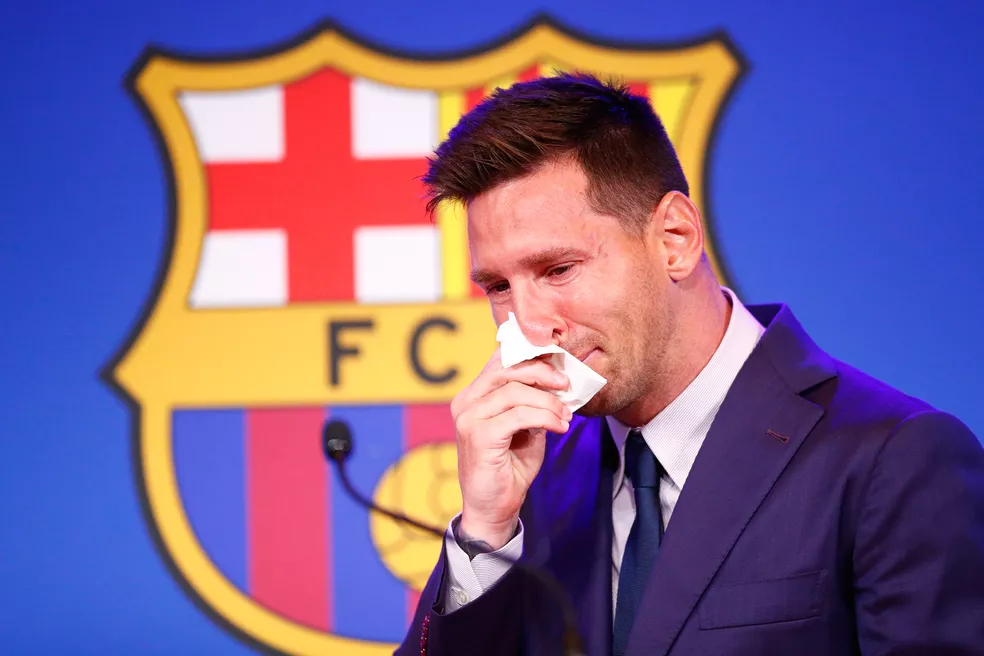
PSG
PSG - 2021/Até o momento
A chegada de Lionel Messi ao Paris Saint-Germain (PSG) gerou um
grande
entusiasmo entre os torcedores do clube francês, que começaram a criar grandes expectativas
em
relação à equipe, incluindo a conquista da tão sonhada e inédita Liga dos Campeões da UEFA.
Vale
lembrar que o PSG perdeu a final da competição em 2020.
Na primeira temporada de Messi no PSG, ele precisou de um período de adaptação, o que acabou refletindo em números medianos, considerando o calibre do jogador. Entretanto, Messi deslanchou, acumulando mais de 30 participações em gols e se tornando uma peça chave no elenco do clube francês.
Na primeira temporada de Messi no PSG, ele precisou de um período de adaptação, o que acabou refletindo em números medianos, considerando o calibre do jogador. Entretanto, Messi deslanchou, acumulando mais de 30 participações em gols e se tornando uma peça chave no elenco do clube francês.
A chegada de Messi ao PSG foi um evento muito aguardado pelos fãs do futebol e do clube
francês.
Depois de anunciar sua saída do Barcelona, Messi rapidamente atraiu o interesse de muitos
clubes
europeus, mas acabou assinando com o PSG em agosto de 2021.
A contratação de Messi pelo PSG foi um grande marco para o clube, que já contava com uma equipe estrelada e ambiciosa. Messi se juntou a outros jogadores de destaque, como Neymar (marcando o retorno da dupla tão querida pelos fãs de futebol) e Mbappé, criando uma das formações mais temidas do futebol mundial.
A contratação de Messi pelo PSG foi um grande marco para o clube, que já contava com uma equipe estrelada e ambiciosa. Messi se juntou a outros jogadores de destaque, como Neymar (marcando o retorno da dupla tão querida pelos fãs de futebol) e Mbappé, criando uma das formações mais temidas do futebol mundial.
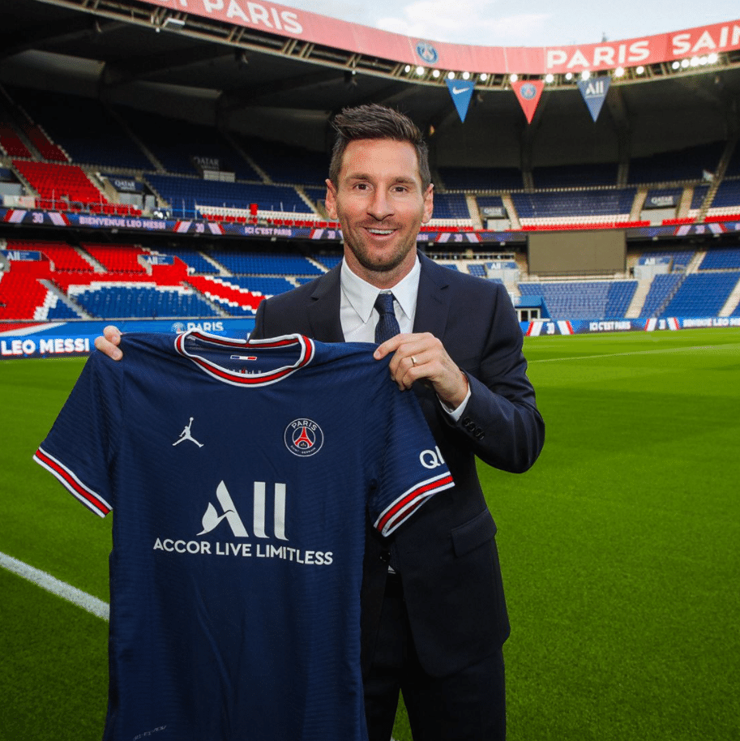
SELEÇÃO ARGENTINA
INÍCIO NA SELEÇÃO
Se o início foi conturbado, devido lesões e atuações discretas,
tudo começou a melhorar a partir de 2007. Ele marcou seu primeiro gol pela equipe principal
em
um amistoso contra a Argélia e ajudou a equipe a se classificar para a Copa América de 2007,
onde terminaram em terceiro lugar
Durante esse período, Messi estabeleceu uma parceria de sucesso com o atacante argentino Carlos Tevez, formando uma das duplas de ataque mais temidas do mundo na época.
Durante esse período, Messi estabeleceu uma parceria de sucesso com o atacante argentino Carlos Tevez, formando uma das duplas de ataque mais temidas do mundo na época.
Messi foi convocado pela primeira vez para a Seleção Argentina em 2005, aos 18 anos, e logo
mostoru seu talento em campo.
Ele foi convocado para a Copa do Mundo da Fifa em 2006, no entanto, sua participação foi limitada devido a lesões. Ele jogou apenas 153 minutos no torneio e não marcou nenhum gol. Apesar disso, Messi conseguiu mostrar um pouco de sua habilidade em campo e sua presença na seleção argentina foi se tornando cada vez mais importante.
Ele foi convocado para a Copa do Mundo da Fifa em 2006, no entanto, sua participação foi limitada devido a lesões. Ele jogou apenas 153 minutos no torneio e não marcou nenhum gol. Apesar disso, Messi conseguiu mostrar um pouco de sua habilidade em campo e sua presença na seleção argentina foi se tornando cada vez mais importante.
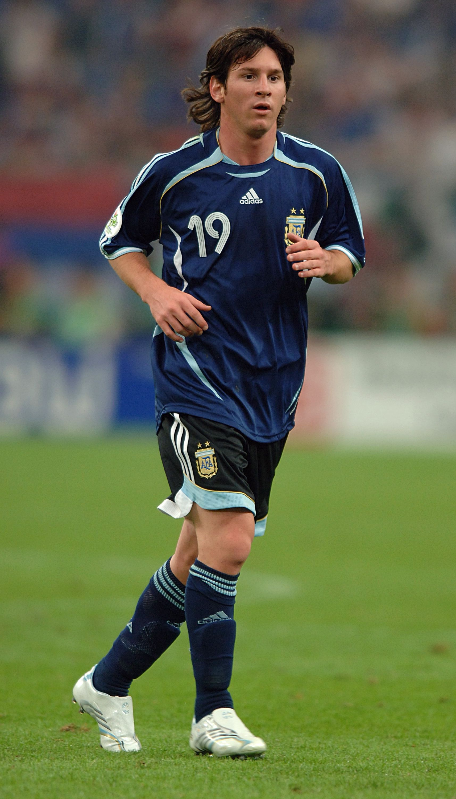
CONSOLIDAÇÃO NA SELEÇÃO - 2008/14
Entre 2008 e 2014, Lionel Messi teve uma grande
importância na
Seleção Argentina, consolidando sua posição como um dos maiores jogadores da história da
equipe.
Durante esse período, Messi marcou um total de 26 gols em 69 jogos pela seleção, sendo um
dos
artilheiros da equipe em várias competições.
Em 2008, Messi liderou a Argentina na conquista da medalha de ouro nos Jogos Olímpicos de Pequim, marcando dois gols na semifinal contra o Brasil. Na Copa do Mundo da FIFA de 2010, na África do Sul, Messi marcou um gol na fase de grupos e ajudou a Argentina a chegar às quartas de final.
Em 2008, Messi liderou a Argentina na conquista da medalha de ouro nos Jogos Olímpicos de Pequim, marcando dois gols na semifinal contra o Brasil. Na Copa do Mundo da FIFA de 2010, na África do Sul, Messi marcou um gol na fase de grupos e ajudou a Argentina a chegar às quartas de final.
Em 2011, Messi teve uma grande atuação na Copa América,
sediada na Argentina, onde marcou 4 gols e levou sua equipe até as quartas de final. No
entanto,
a seleção argentina foi eliminada nos pênaltis pela Uruguai
Em 2012, Messi ajudou a Argentina a se classificar para a Copa do Mundo da FIFA de 2014, no Brasil, competição que marcou o início da pior fase da carreira do Messi pela seleção, também a mais conturbada e polêmica de sua carreira.
Em 2012, Messi ajudou a Argentina a se classificar para a Copa do Mundo da FIFA de 2014, no Brasil, competição que marcou o início da pior fase da carreira do Messi pela seleção, também a mais conturbada e polêmica de sua carreira.
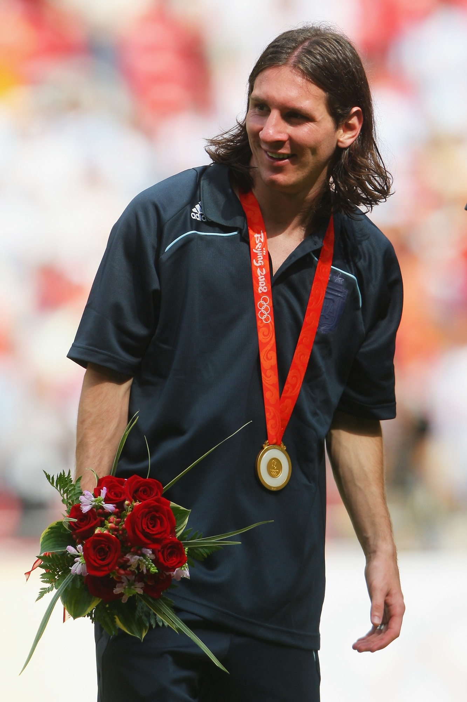
APOSENTADORIA DA SELEÇÃO? - 2014/16
Em 2016, a Argentina novamente chegou à final da Copa América,
mas
foi derrotada pelo Chile novamente, também nos pênaltis. Messi mais uma vez perdeu um
pênalti na
decisão por pênaltis e ficou visivelmente frustrado com a derrota.
Após essa derrota, Messi anunciou sua aposentadoria da seleção argentina, mas acabou voltando atrás em sua decisão alguns meses depois. Sua decisão causou grande polêmica na Argentina e em todo o mundo do futebol, com muitos questionando sua liderança e comprometimento com a seleção.
Após essa derrota, Messi anunciou sua aposentadoria da seleção argentina, mas acabou voltando atrás em sua decisão alguns meses depois. Sua decisão causou grande polêmica na Argentina e em todo o mundo do futebol, com muitos questionando sua liderança e comprometimento com a seleção.
As derrotas de Lionel Messi na Seleção Argentina em 2014, 2015 e 2016 foram momentos
difíceis
para o jogador e para a equipe. Em 2014, a Argentina chegou à final da Copa do Mundo da
FIFA,
mas acabou sendo derrotada pela Alemanha por 1 a 0 na prorrogação. Messi marcou 4 gols e
acabou
sendo eleito o melhor jogador da competição.
No entanto, nos anos seguintes, a seleção argentina não conseguiu repetir o mesmo desempenho. Em 2015, a Argentina chegou à final da Copa América, mas perdeu nos pênaltis para o Chile. Messi perdeu um pênalti na decisão por pênaltis e ficou bastante abalado com a derrota.
No entanto, nos anos seguintes, a seleção argentina não conseguiu repetir o mesmo desempenho. Em 2015, a Argentina chegou à final da Copa América, mas perdeu nos pênaltis para o Chile. Messi perdeu um pênalti na decisão por pênaltis e ficou bastante abalado com a derrota.
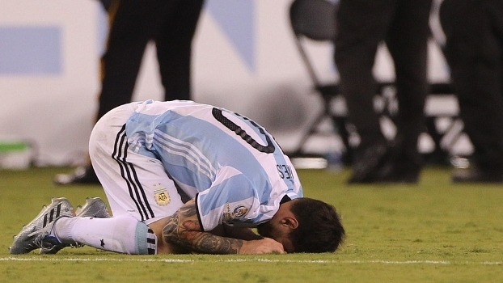
INÍCIO DA FASE DE OURO - 2018-22
Lionel Messi liderou a Seleção Argentina para a Copa do Mundo
de
2018 em uma classificação dramática contra o Equador, onde ele marcou três gols. Embora a
Argentina tenha sido eliminada nas oitavas de final pela França, Messi continuou a ser a
estrela
da equipe e o coração da nação argentina.
No entanto, a sorte da seleção começou a mudar em 2021, quando Messi finalmente conquistou o seu primeiro título importante pela Argentina: a Copa América. Ele foi eleito o melhor jogador da competição, marcando quatro gols e dando cinco assistências.
No entanto, a sorte da seleção começou a mudar em 2021, quando Messi finalmente conquistou o seu primeiro título importante pela Argentina: a Copa América. Ele foi eleito o melhor jogador da competição, marcando quatro gols e dando cinco assistências.
A conquista da Copa América foi seguida pela La Finalíssima,
disputada entre o campeão da Copa América e o campeão da Eurocopa, que em 2022 foi a Itália.
Mais uma vez, Messi liderou a Argentina para a vitória, conquistando o seu segundo título
com a
seleção.
As conquistas recentes da seleção argentina, como a Copa América e a La Finalíssima, tiveram um efeito notável sobre a confiança dos jogadores e da nação argentina. Essa confiança crescente se mostrou decisiva na preparação da equipe para a Copa do Mundo de 2022, onde a Argentina alcançou um feito histórico.
As conquistas recentes da seleção argentina, como a Copa América e a La Finalíssima, tiveram um efeito notável sobre a confiança dos jogadores e da nação argentina. Essa confiança crescente se mostrou decisiva na preparação da equipe para a Copa do Mundo de 2022, onde a Argentina alcançou um feito histórico.
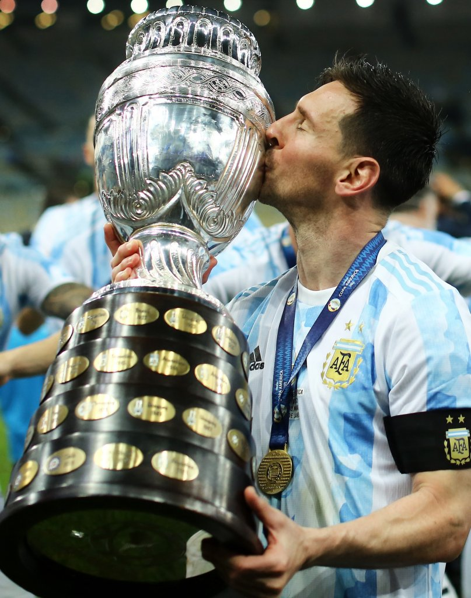
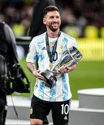
SUPREMACIA FUTEBOLÍSTICA ALCANÇADA
O AUGE DO FUTEBOL, O SUPRASSUMO, O MOMENTO MAIS MÁGICO
PARA QUEM É FÃ DE FUTEBOL E EM ESPECIAL, FÃ DO MESSI.
Em uma Copa do Mundo que marcava como sendo a
última de Lionel Messi, todos os olhos estavam atentos para qualquer movimento que ele
realizasse.
Após um início com tropeço na fase de grupos, perdendo de virada para a Arábia Saudita, muitos já se perguntavam se era esse o futuro da Argentina, ser eliminada na primeira fase justo na última participação de Messi no torneio. Entretanto os “deuses” do futebol guardavam o melhor, que ainda estava por vir.
Marcando gols contra México, Austrália, Holanda e Croácia, Lionel Messi levou a Argentina para mais uma final de Copa do Mundo, que seria decidida contra a França.
Após um início com tropeço na fase de grupos, perdendo de virada para a Arábia Saudita, muitos já se perguntavam se era esse o futuro da Argentina, ser eliminada na primeira fase justo na última participação de Messi no torneio. Entretanto os “deuses” do futebol guardavam o melhor, que ainda estava por vir.
Marcando gols contra México, Austrália, Holanda e Croácia, Lionel Messi levou a Argentina para mais uma final de Copa do Mundo, que seria decidida contra a França.
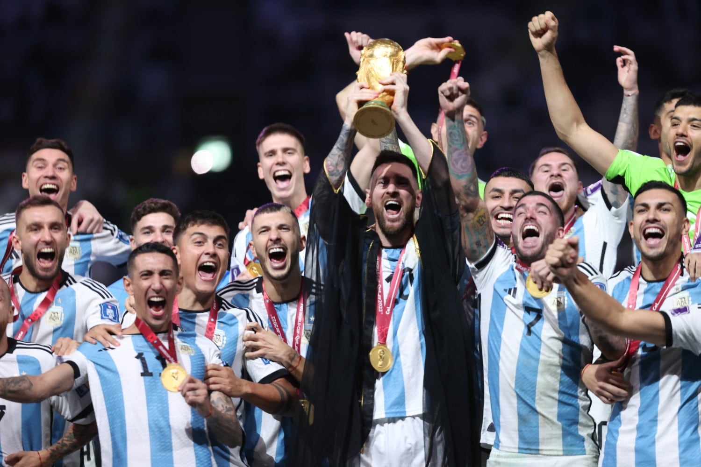
Na final, Messi inicia o jogo marcando de penâlti
para abrir o placar, seguido de um gol de Di María aos 36 minutos, que fez com que todos
achassem que seria um jogo fácil, quissá um passeio da seleção Argentina.
Porém em 2 minutos, Mbappé empata para a França e leva o jogo para a prorrogação. Na prorrogação, Messi marca mais um e no apagar das luzes, Mbappé empata de penâlti, o que leva a decisão para os penâltis.
Nos penâltis, Messi e Mbappé marcam os seus, porém Coman e Tchouaméni erram e a Argentina se sagra tri-campeã mundial de Futebol.
Porém em 2 minutos, Mbappé empata para a França e leva o jogo para a prorrogação. Na prorrogação, Messi marca mais um e no apagar das luzes, Mbappé empata de penâlti, o que leva a decisão para os penâltis.
Nos penâltis, Messi e Mbappé marcam os seus, porém Coman e Tchouaméni erram e a Argentina se sagra tri-campeã mundial de Futebol.
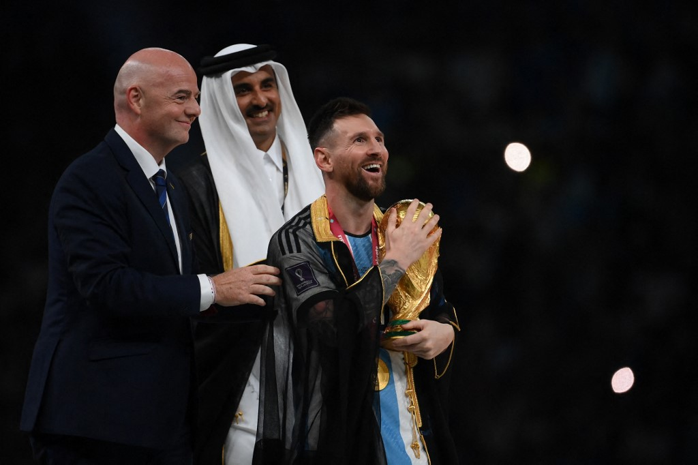
Messi se torna, sem sombra de dúvidas, o maior e
melhor jogador da história da seleção Argentina e põe seu nome na prateleira de Pelé, como
um dos melhores da história do futebol. Essa conquista também encerra qualquer debate com
qualquer outro jogador da geração, como por exemplo Cristiano Ronaldo, que foi rival de
Messi durante toda a década anterior.
As ruas de Buenos Aires foram tomadas por torcedores que estavam atônitos após a essa conquista, um país que sofria tanto por motivos políticos e sociais, finalmente pode ter um momento de paz e alegria.
As ruas de Buenos Aires foram tomadas por torcedores que estavam atônitos após a essa conquista, um país que sofria tanto por motivos políticos e sociais, finalmente pode ter um momento de paz e alegria.
Messi, você é incrível!
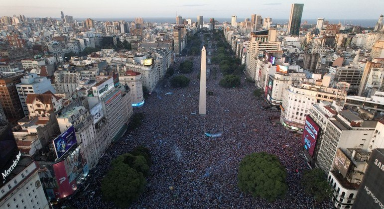
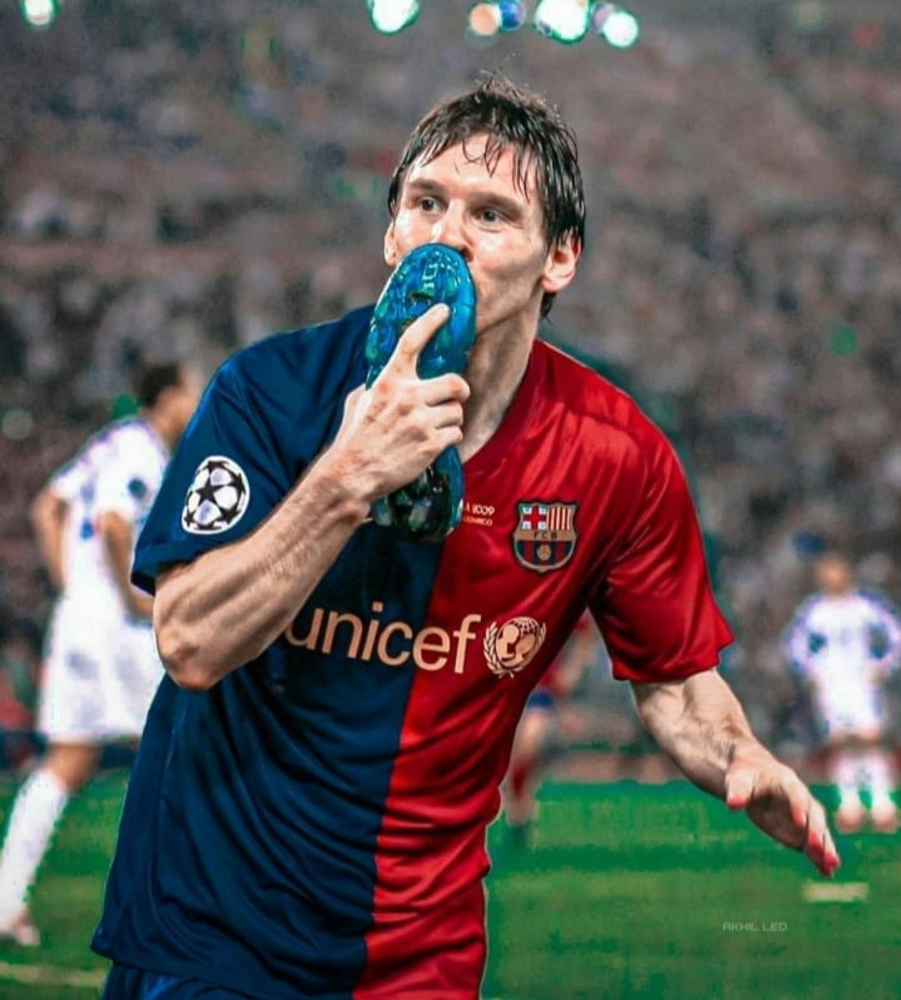
E o porquê desse site?
Comecei a acompanhar o Messi em 2009, porém já jogava futebol desde
2006.
Desde então me tornei afixionado pelo seu futebol e estilo de jogo, se tornando a minha referência
máxima.